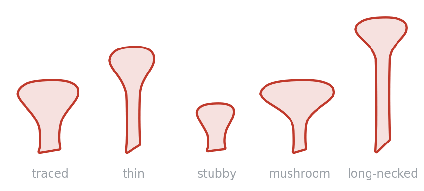
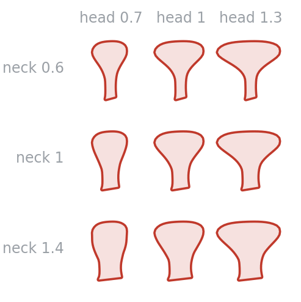

All examples Neuroscience
Dendritic spine
The shape biodraw grew out of, and the clearest example of why it traces rather than synthesises.
profile.get('spine')Branch

Traced off a hand drawing, because every attempt to build this profile out of ellipses read as a cone or a bead on a stick.
One outline, the shapes people name

Head and neck

On a branch


How it is built

- Traced, then normalised. 56 vertices from a hand drawing, rotated onto their long axis and scaled.
- The shape as a function. Half-width against
x: flat neck, then flare. The asymmetry is the drawing's own wobble. - Lengthening the neck.
extendstretches only the shaded span, so the head rides out rigidly instead of inflating. - Placed. Same head, three neck lengths.
Drawing one
import biodraw as bd
from biodraw.core import profile, render
from biodraw.core.branch import Branch
spine = profile.get("spine")
branch = Branch(
origin=(0, 0),
direction=(0, 1),
length=1.8,
bend=0.10, # the slow lean; sign picks the side
)
branch.decorate(
profile="spine",
n=8, # how many
size=0.21, # each spine's length
extend=0.04, # ...plus this much extra neck
head=1.22, # head width, x the traced one — a mushroom spine
neck=0.55, # ...on a neck thinned to just over half
first_t=0.30, # leave the proximal shaft bare for shaft contacts
last_t=0.86, # ...and stop short of the tip
)
wall, open_tip = branch.parts(
width=0.11, # full tube width where it leaves the origin
taper=0.72, # width at the tip, as a multiple of that
base_ext=0.05, # bury the base inside whatever it grows from
)
ink = bd.style.palette.get()["primary"]
fig, ax = bd.canvas(figsize=(2.8, 4.4))
render.render_hollow(
ax=ax,
parts=wall, # closed outlines — the spines
open_parts=open_tip, # the tube, whose far end stops rather than caps
fill=None, # None washes the interior with the wall colour
edge=ink, # the wall
wall_lw=1.0, # wall thickness, in points
gid="dendrite", # names the layer in the exported SVG
)
bd.fit(ax, wall + open_tip, pad=0.12)
bd.save(fig, "dendrite.svg")Every figure above is output, not a stored asset —
drawn by dendritic_spine/build.py, in Python, on a matplotlib axes.